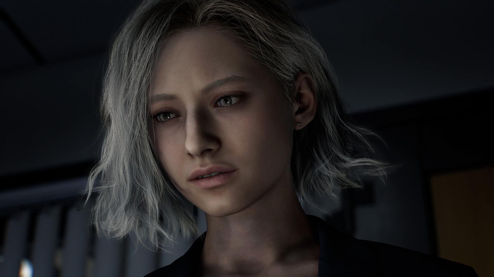
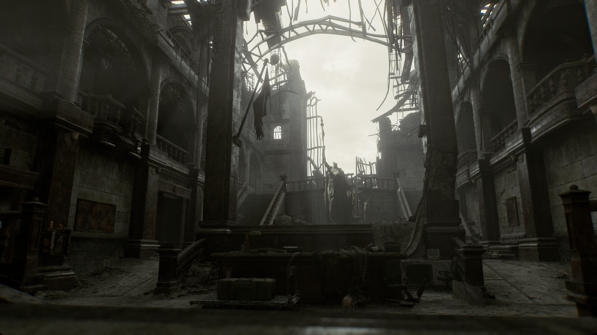
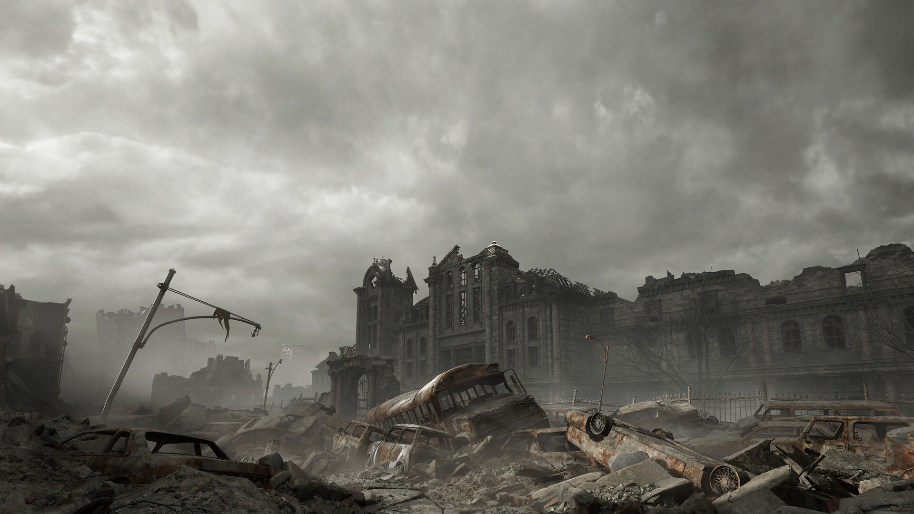
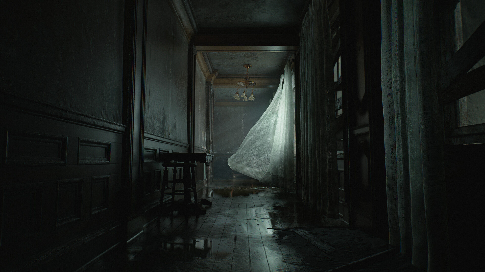
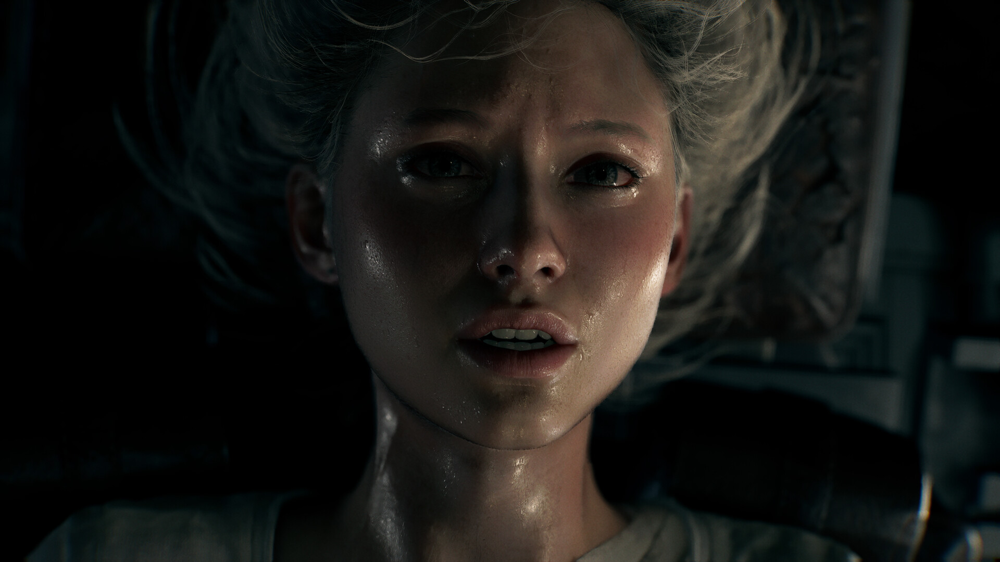

Resident Evil Requiem terá um significado simbólico para o 30º aniversário da franquia em 2026. As curiosidades incluem: um título que remete a um tributo para as vítimas de Raccoon City, a possibilidade de múltiplos protagonistas (incluindo a nova protagonista Grace e o retorno de Leon S. Kennedy), e um modo de jogo híbrido onde o jogador poderá alternar entre câmeras em primeira e terceira pessoa.



📜 História e Enredo (Modo História)
A história de Resident Evil Requiem gira em torno de Grace Ashcroft, uma analista do FBI enviada para investigar mortes estranhas em um hotel em Raccoon City, onde sua mãe, a jornalista Alyssa Ashcroft (de Resident Evil Outbreak), foi morta anos antes. O jogo se passa cerca de 30 anos após a destruição da cidade, que está agora isolada. Grace, uma pessoa introvertida e com pouca experiência em combate, precisa enfrentar um novo e aterrorizante mistério que a força a confrontar seu passado.
🐎 Jogabilidade e Mecânicas
A jogabilidade de Resident Evil Requiem foca em survival horror com mecânicas de furtividade e perseguição, alternando entre as perspectivas de primeira e terceira pessoa. Uma criatura com inteligência artificial persegue a protagonista, exigindo que o jogador se esconda, use o ambiente e a luz para se defender. O jogo também apresenta exploração, resolução de puzzles, gerenciamento de recursos e menos ênfase na ação direta em comparação com outros títulos da franquia.